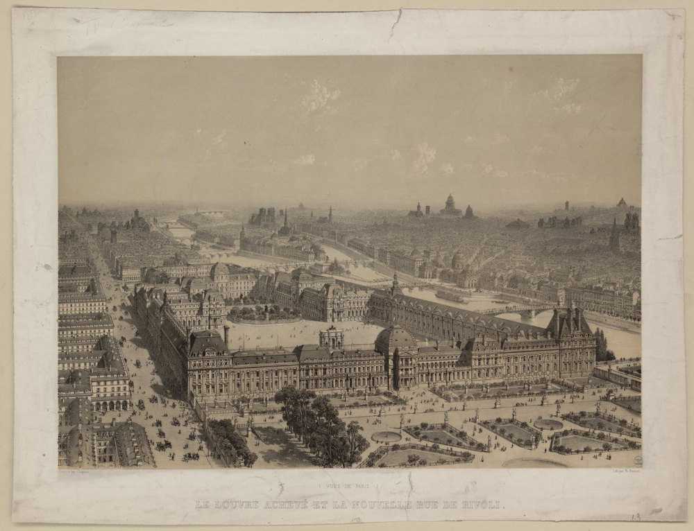
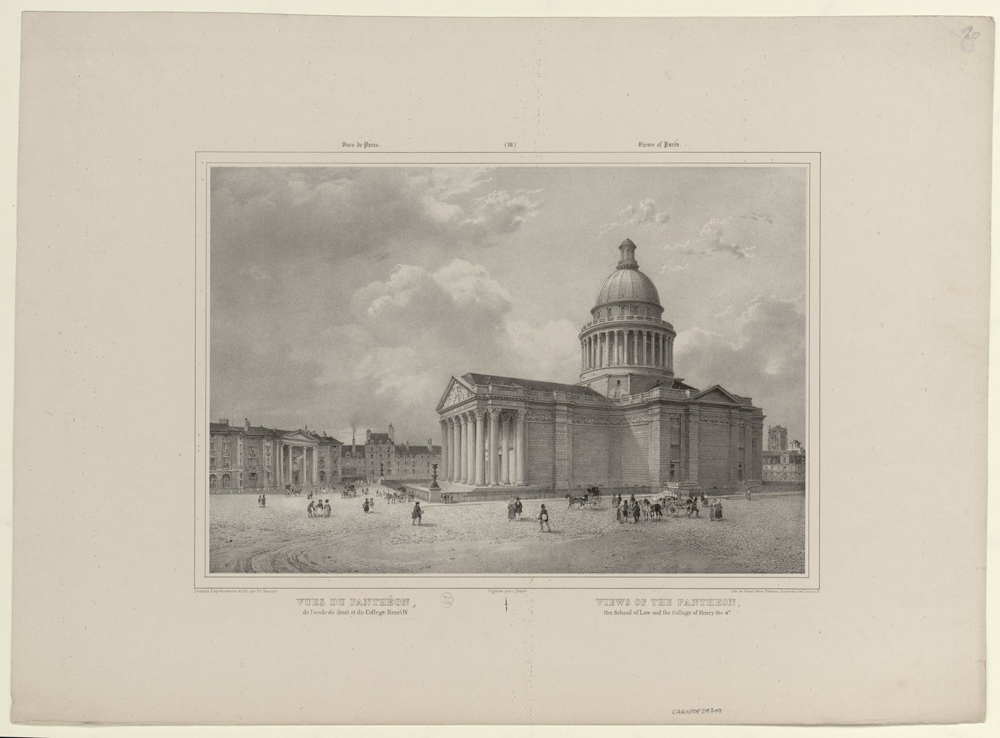

Книги и альбомы
Путеводители можно листать в архивах. Альбомы городских видов собраны рядом, чтобы увидеть, как художники изображали те же города.
Загружаем книги…
Париж Филиппа и Феликса Бенуа
У Филиппа Бенуа можно увидеть площадь перед Нотр-Дамом и парижский Пантеон. Рядом — выставочные павильоны на листе Феликса Бенуа. Все эти листы хранятся в музее Карнавале.

Галерея Орлеана
Филипп Бенуа · CC0 Смотреть в музее Карнавале
Лувр со стороны Риволи
Филипп Бенуа · CC0 Смотреть в музее Карнавале
Пантеон в Париже
Филипп Бенуа · CC0 Смотреть в музее Карнавале
Вандомская колонна
Филипп Бенуа · CC0 Смотреть в музее Карнавале